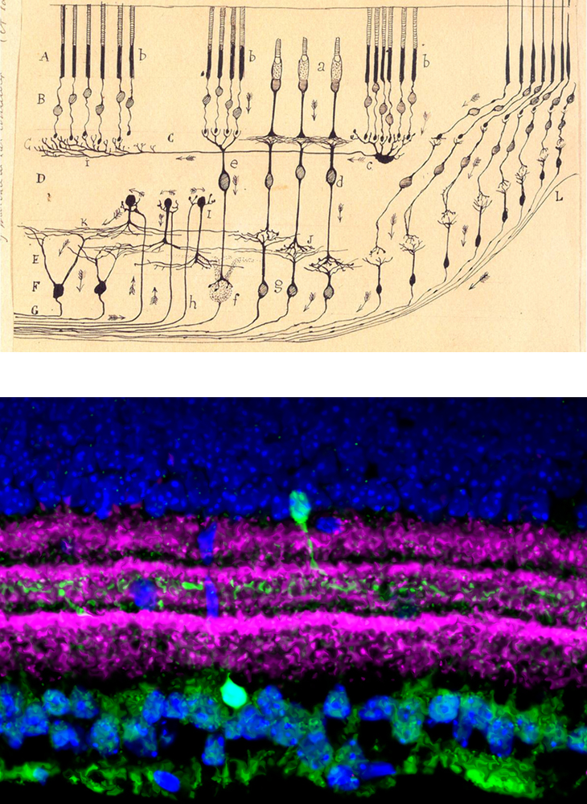
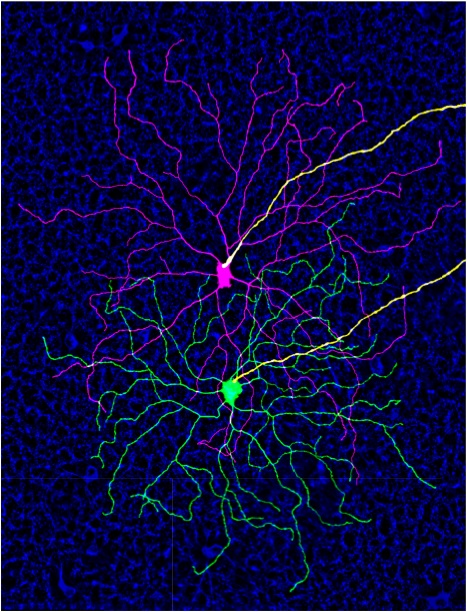

Mission Statement
Our ultimate mission is to make discoveries that will lead to improved therapies for blinding diseases and other neurological disorders. To get there, we will use interdisciplinary approaches to rigorously study the molecular basis of disease. We assert that to understand disease it must be studied at the cellular level. Neurons in the brain are remarkably diverse and comprise cell types that each have distinct molecular, physiological, and morphological characteristics. We are currently studying the interaction between cell type and disease pathology in multiple degenerative models.
Vision Science
Neural Repair
Molecular Genetics
Single-cell Genomics
Research Areas

Retina, an approachable part of the brain
The retina has been used since the time of Ramón y Cajal to study basic principles of neurobiology. It is more experimentally tractable than the rest of the brain and there is an abundance of molecular and genetic tools to target specific neuronal populations. We have been using single-cell RNA-sequencing (scRNA-seq) to develop a comprehensive cellular atlas of all mouse retinal cell types, demonstrating that the retina is similarly complex to the rest of the brain (~130 cell types). Utilizing this "fully resolved" tissue, we are now positioned to ask how cell types differentiate during development and how they are affected by disease. [Photo- (top) Drawing of retinal neurons by Ramón y Cajal, (Bottom) Confocal image of a genetically labeled amacrine cell - Nicholas Tran]

Selective vulnerability in neurodegeneration
A common phenomenon in neurodegenerative disorders is that certain cell types are more affected than others, even when perturbation is shared. We are using single-cell genomics to dissect what happens in different neuronal populations during neurodegeneration. By determining gene expression patterns correlating with resilience and susceptibility, we seek to identify targets for therapeutic intervention. We are currently focused on studying the selective vulnerability of retinal ganglion cells in optic neuropathies like glaucoma. [Photo- Reconstruction of two resilient retinal ganglion cells after axonal injury - Nicholas Tran]
Neuroprotection and axon regeneration
Neurons in the central nervous system have limited potential to recover from damage to their axons. If not repaired, axonal injury can lead to cellular degeneration and functional loss. Thus, identifying ways to protect neurons and stimulate axon regeneration could hold tremendous clinical value. However, current neuroprotective and regenerative treatments fall woefully short of recovery, often only promoting survival and regeneration of a small set of neurons. Why do some neurons respond while others continue to degenerate? We are studying the cell-type specific effects of treatments to determine what differentiates the responders from the non-responders. Our goal is to design treatments that work more effectively across neuronal populations and promote functional recovery.
Select Publications
For the most complete and up to date list, see Dr. Tran's Google scholar page.
- • Jacobi A*, Tran NM*, Yan W*, Benhar I, Tian F, Schaffer R, He Z, Sanes JR. Overlapping transcriptional programs promote survival and axonal regeneration of injured retinal ganglion cells. Neuron (2022) doi:10.1016/J.NEURON.2022.06.002. [Link to Journal]
- • Tran NM, Shekhar K, Whitney IE, Jacobi A, Benhar I, Hong G, Yan W, Adiconis X, Arnold ME, Lee JM, Levin JZ, Lin D, Wang C, Lieber CM, Regev A, He Z, Sanes JR "Single-Cell Profiles of Retinal Ganglion Cells Differing in Resilience to Injury Reveal Neuroprotective Genes." Neuron. 2019 December 18; 18 (104): 1039-1055. Pubmed PMID: 31784286 [Online][Press Release][In the News]
- • Yan* W, Laboulaye* MA, Tran* NM, Whitney IE, Benhar I, Sanes JR "Mouse Retinal Cell Atlas: Molecular Identification of over Sixty Amacrine Cell Types." Neurosci.. 2020 July 1; 40 (27): 5177-5195. Pubmed PMID: 32457074 *Co-first author [Online] [We got the cover!]
- • Shekhar K, Lapan SW, Whitney IE, Tran NM, Macosko EZ, Kowalczyk M, Adiconis X, Levin JZ, Nemesh J, Goldman M, McCarroll SA, Cepko CL, Regev A, Sanes JR "Comprehensive Classification of Retinal Bipolar Neurons by Single-Cell Transcriptomics." Cell. 2016 August 25; 166 (5): 1308-1323. Pubmed PMID: 27565351 [Online]
- • Lindborg JA, Tran NM, Chenette DM, DeLuca K, Foli Y, Kannan R, Sekine Y, Wang X, Wollan M, Kim IJ, Sanes JR, Strittmatter SM "Optic nerve regeneration screen identifies multiple genes restricting adult neural repair." Cell Rep.. 2021 March 2; 34 (9): 108777. Pubmed PMID: 33657370 [Online]
- • Peng YR, Tran NM, Krishnaswamy A, Kostadinov D, Martersteck EM, Sanes JR "Satb1 Regulates Contactin 5 to Pattern Dendrites of a Mammalian Retinal Ganglion Cell." Neuron. 2017 August 16; 95 (4): 869-883. Pubmed PMID: 28781169 [Online]
- • Norsworthy MW, Bei F, Kawaguchi R, Wang Q, Tran NM, Li Y, Brommer B, Zhang Y, Wang C, Sanes JR, Coppola G, He Z "Sox11 Expression Promotes Regeneration of Some Retinal Ganglion Cell Types but Kills Others." Neuron. 2017 June 21; 94 (6): 1112-1120. Pubmed PMID: 28641110 [Online]
Lab news
-
7/17/21: Notice of Award! We have been awarded a Mission Connect Seed Funding Award from the TIRR Foundation. Thanks to our sponsors.
-
6/28/22 Now out in Neuron: Overlapping transcriptional programs promote survival and axonal regeneration of injured retinal ganglion cells
"Jacobi A*, Tran NM*, Yan W*, Benhar I, Tian F, Schaffer R, He Z, Sanes JR. Overlapping transcriptional programs promote survival and axonal regeneration of injured retinal ganglion cells." [Link to Journal]
-
6/13/22 Jessica Ehondor joins the lab as a Research Technician II. Welcome Jessica!
-
5/28/22: Notice of Award! We have been awarded the Levy-Longenbaugh Research Award (Junior Faculty Seed Award). Thanks to our sponsors.
-
5/3/22 Julie Ann Goddard joins the lab as our first PhD student. Welcome Julie Ann!
-
1/31/22 Ting Kuan Chu joins the lab as a Research Assistant. Welcome Ting Kuan!
-
1/20/22 We're excited to announce our latest pre-print on the transcriptional programs associated with RGC axon regeneration!
"Jacobi A*, Tran NM*, Yan W*, Benhar I, Tian F, Schaffer R, He Z, Sanes JR. Overlapping transcriptional programs promote survival and axonal regeneration of injured retinal ganglion cells." [BioRxiv link]
-
7/26/21: The Tran lab is hiring a postdoc and a research technician!
Candidates with training and interest in molecular biology, mouse genetics and/or bioinformatics please email Dr. Tran and/or apply directly to the relevant BCM job listing. [Postdoc] [Technician]
-
7/19/21: Renovations on the Tran lab's space at S915 are completed. Stop on by! [Tweet]
-
7/6/21: Notice of Award! We have been awarded an R00 grant (EY029360) to study the 'Determinants of type-dependent retinal ganglion cell resilience: potential targets for neuroprotection and axon regeneration' by the NIH/NEI.
-
6/1/21: The Tran lab opens at Baylor College of Medicine!
>
People
Ting Kuan Chu - Research Assistant I
Jessica Ehondor
Research Technician II
Julie Ann Goddard
Graduate Student in Genetics and Genomics - Graduate School of Biomedical Sciences, Baylor College of Medicine
Contact
Interested in joining our group?
We are recruiting trainees and laboratory technicians! Candidates with training and interest in neurobiology, molecular biology, mouse genetics, and/or bioinformatics, please email Dr. Tran and/or apply directly to the relevant BCM job listing. [Postdoc] [Research Technician]

Nicholas Tran
1 Baylor Plaza
Smith Research Building Rooms 915 (lab) and 916 (tissue culture)
Department of Human and Molecular Genetics
Baylor College of Medicine
Houston, TX 77030